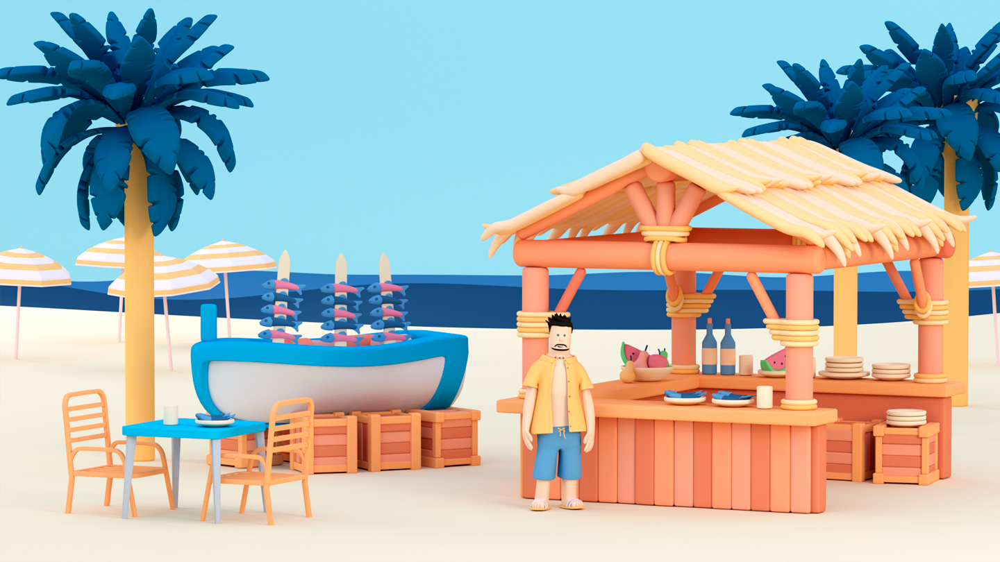
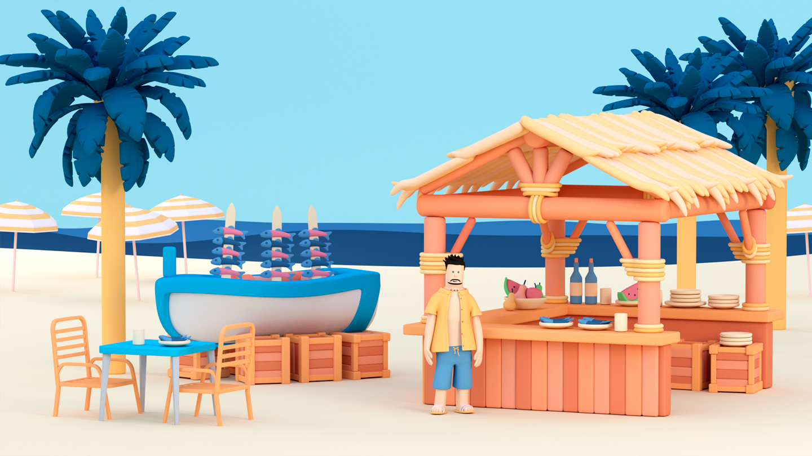
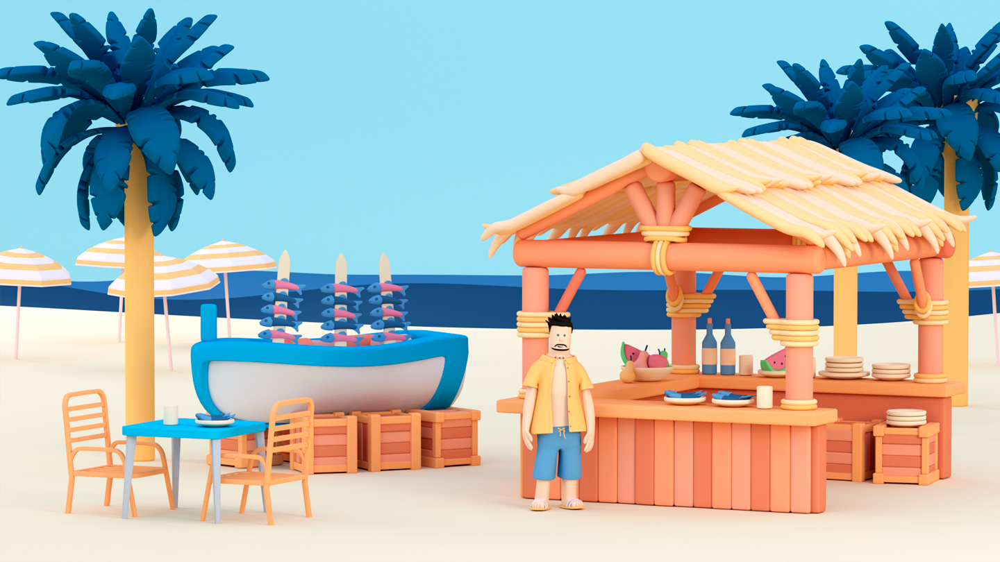

We were contacted by Paulina Grondel of Trivago, Spain to create two 30 second spots as part of a new animated campaign. The idea was simple, to zoom from space to Spain and along the way show how many hotels were available to Hotel Trivago users. We cherry picked different styles of architecture to compliment each region of Spain. The spots then changed at "street level" - one set on a colourful street in Tenerife with peach and pink buildings while the second was set in the crisp white walls of Malaga adorned with flowers, shurbs and hanging baskets. Each advert signs off with the "Mr. Trivago character" in different scenarios, the first he's in a large hotel complex and ends with him surfing while the second shows Hotel Trivago users how they can use filters to choose what size pool they would like on their holiday and ends with our hero at a fried fish hut. A common sight in Malaga. Both pieces were a collaborative result of Paulina's creative direction and strong eye for colour, The Rusted Pixel's design asthetics and Ruye's wonderful ability to bring things to life.
